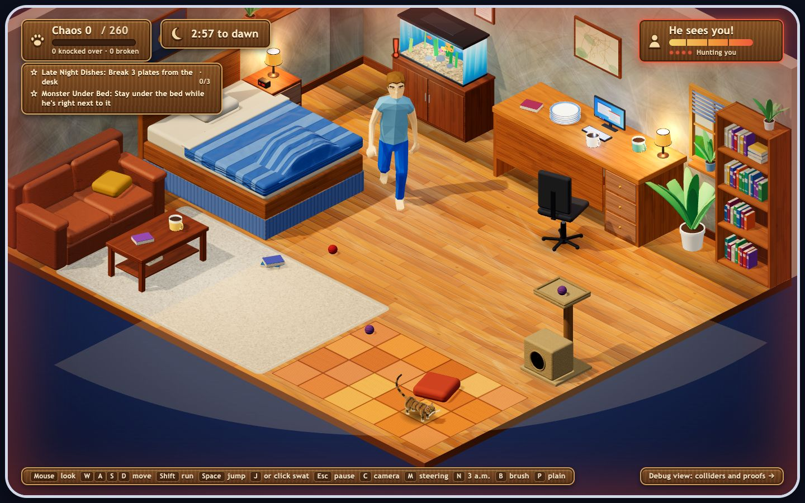

Feature-complete build (WebGL, hosted): https://antarathapliyal31.github.io/ai_visual_project/harness/play.html
Build zip: https://github.com/Antarathapliyal31/ai_visual_project/archive/refs/heads/Rushi.zip · Unzip, run python3 -m http.server 8550 in the folder, open localhost:8550/harness/play.html.
Source code (public): https://github.com/Antarathapliyal31/ai_visual_project (branches Rushi and main hold the same build) · npm install && npm test runs 428 headless tests.

src/levels/validate.js) checks every layout: nothing overlaps, every hiding place can be reached and is hidden from the open room, and the owner can walk to everything. Failures go back to the model as reasons until the room passes. There are 23 rooms (our original and the models' 22) in Easy (9), Medium (8) and Hard (6), by a measured difficulty; the game picks one the player hasn't played.Methodology. On Nov 23–24 we sent five classmates from outside our group the link to the hosted build and a short feedback form. They played on their own computers, without us there, and filled in the form afterwards. We sent only the links, so the menu and the on-screen hints had to teach the controls. The form asked the brief's three interview questions (the most confusing or frustrating moment; how intuitive the controls were, 1–10; glitches or lag, and when), then how the night ended, their setup, the difficulty and four 1–5 ratings. Its last page, written for an observer, asked where they got stuck, the lowest FPS they saw (the game shows it), prompts they missed and glitches; with no one watching, players 3–5 answered it themselves. As the sessions were not observed, we have no think-aloud or silent notes of our own. Players 1 and 2 answered an earlier version of the form, without the written “most confusing” answer, the setup question or the last page (– in the table).
Subject feedback.
| # | Setup | Night; difficulty | Controls (1–10) | Most confusing or frustrating | Glitches or lag (when) | Form's last page (their own notes) |
|---|---|---|---|---|---|---|
| 1 | – | Caught; about right | 6 | – | “There were lags” (no time given). | – |
| 2 | – | Caught; about right | 8 | – | None. | – |
| 3 | MacBook | Stopped early; about right | 10 | None (“N/A”). | After a switch to another tab, Resume didn't restart the game; it was closed and played again, smoothly. | Glitch: “loading”; not stuck, no missed prompts. |
| 4 | Laptop, mouse | Dawn; much too easy | 7 | A cluttered welcome menu (suggests a first-play tour), and the owner's state (top right) was unclear: explain his states at the start. | The owner's head spun erratically while he knelt on the bed. Full lighting is “so dark and murky”; plain looks clean. | Lowest 68 FPS. |
| 5 | Chrome, MacBook, trackpad | Caught; about right | 8 | None: “well balanced”. | None: “it worked smooth”. | Lowest 15 FPS (no time given), though they said it ran smoothly; not stuck, no missed prompts, no glitches. |
Summary. Controls averaged 7.8/10 (6–10); no written answer named them as a problem. Difficulty: four found it about right; three were caught, one stopped early, and the one who reached dawn found it much too easy. Goal clarity, reading the owner and knocking things over each averaged 4.2/5 (reading the owner went down to 3), and enjoyment 4.4/5. UI confusion was about the owner's states and a busy menu. Performance varied: one player felt lag, another reported a low of 15 FPS on a MacBook while saying it ran smoothly, and a third never dropped below 68. Two bugs: Resume after a tab switch, and the owner's head spinning while he knelt.
Action items for Assignment 7, from this playtest data:
Week 12 (Nov 16–22), plan against outcome. Done: difficulty tiers (now measured on each room), the chaos goal and missions, and the round summary. Added: the AI-designed rooms, names and the leaderboard, and the two cameras with mouse control (these landed in Week 13). Cut: sound and the Vite build/CI. The freeze moved one day, from Nov 22 to Nov 23.
| Week | Engineering | Assets | Integration and milestone |
|---|---|---|---|
| 13 · Nov 23–29 this build |
Done: cameras, the owner's fixes, the bookshelf, names and the leaderboard; the playtests (Nov 23–24). Next: fixes for anything that blocks play. Thanksgiving week, so a light load. | Final menu and HUD text, report screenshots. | Feature freeze, Nov 23. Rushi and main are one build. |
| 14 · Nov 30–Dec 6 Assignment 7 |
Optimization sprint on the four action items. Also: Firefox and Safari; the owner and debris at 200–400 bodies (A); re-scoring room difficulty; missions for the last 14 rooms. Polish and fixes only, no new features. | Demo video. | Final submission: README, report and video. |